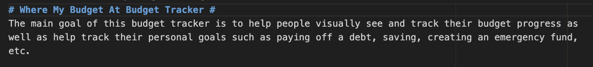

Personal Portfolio Website
This very site! Built from scratch with HTML & CSS only. Features responsive design, dark mode toggle, and a clean layout. My first big web project for class.
Technologies: HTML, CSS, a tiny bit of JS for theme toggleHere are some things I've worked on or enjoy doing in my free time. From coding experiments to exploring my culture and hobbies!
This very site! Built from scratch with HTML & CSS only. Features responsive design, dark mode toggle, and a clean layout. My first big web project for class.
Technologies: HTML, CSS, a tiny bit of JS for theme toggle
Two semesters ago, My group built a desktop budgeting application using JavaFX for the GUI. The app lets users track income, expenses, set monthly budgets per category, view current balance, and generate simple charts for spending trends. Data was stored locally. It was a great way to practice UI design with scenes, stages, controls like Tables, Charts, and event handling in Java.
Technologies: Java, JavaFX (FXML + CSS styling), basic file I/OI am Vietnamese and one thing that I've always loved is Pho. Traditional pho takes more than 6-7 hours to make, but I have learned to make it faster with the help of this video!
I have made this recipe over the years at NMSU in my dorm. (PS I am not a chef but it's really good 😊)